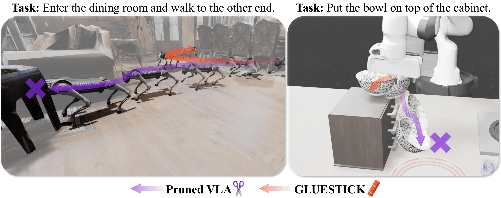
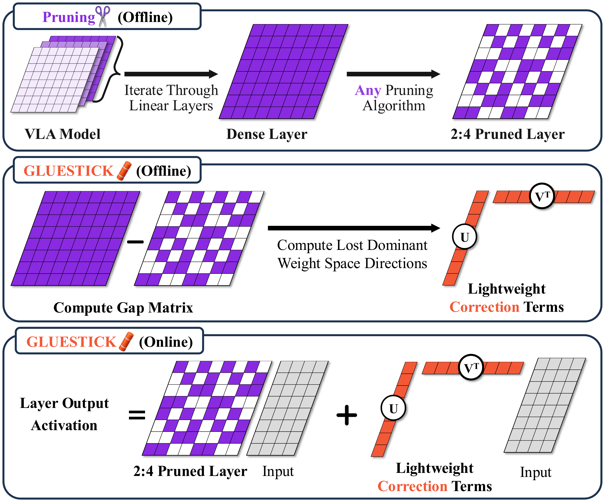

: Pruning Breaks
: Pruning Breaks
VLAs break under pruning, and GLUESTICK fixes them. Pruning methods unexpectedly cause task and safety failures in VLAs: colliding with an object in a navigation task (left), or dropping a bowl in a manipulation task (right). Our post pruning method, GLUESTICK, restores the lost functionality of the original model.
Vision-Language-Action (VLA) models have advanced robotic capabilities but remain challenging to deploy on resource-limited hardware. Pruning has enabled efficient compression of large language models (LLMs), yet it is largely understudied in robotics. Surprisingly, we observe that pruning VLA models leads to drastic degradation and increased safety violations. We introduce GLUESTICK, a post-pruning recovery method that restores much of the original model's functionality while retaining sparsity benefits. Our method performs a one-time interpolation between the dense and pruned models in weight-space to compute a corrective term. This correction is used during inference by each pruned layer to recover lost capabilities with minimal overhead. GLUESTICK requires no additional training, is agnostic to the pruning algorithm, and introduces a single hyperparameter that controls the tradeoff between efficiency and accuracy. Across diverse VLA architectures and tasks in manipulation and navigation, GLUESTICK achieves competitive memory efficiency while substantially recovering success rates and reducing safety violations.

Overview of GLUESTICK. (Top) A VLA model is pruned with a standard algorithm (e.g., Wanda) to enforce 2:4 sparsity in linear layers. (Middle) Offline, we compute the gap between the dense and pruned weights and extract dominant lost directions via SVD, yielding lightweight corrections. (Bottom) At inference time, these correction terms are applied alongside the pruned weights, effectively adding back lost signal.
We propose \(\method\), a post-hoc, training-free recovery method that operates entirely in weight space and is agnostic to the pruning algorithm (see Figure 1). \(\method\) requires only the original dense model and its pruned counterpart, and incurs a one-time offline cost; no additional training is required.
Specifically, for each linear layer with dense weight matrix \( W_\mathrm{dense}\in\mathbb{R}^{d_\mathrm{out}\times d_\mathrm{in}} \) and its pruned version \(W_{\text{pruned}}\) (fixed, preserving the original 2:4/4:8 pattern), we define the gap matrix:
\[ W_\mathrm{gap} = W_\mathrm{dense} - W_\mathrm{pruned} \]which captures lost information due to pruning. We then compute a truncated singular value decomposition (SVD) of the gap matrix:
\[ W_\mathrm{gap} = U \Sigma V^\top \approx U_r\Sigma_r V_r^\top \]keeping the top \(r\) singular components. This is the best rank-\(r\) approximation to \(W_\mathrm{gap}\) in Frobenius norm. For memory and speed, we fold the singular values into one term so that only two compact matrices need to be stored:
\[ A = U_r \Sigma_r \in \mathbb{R}^{d_\mathrm{out}\times r}, \quad B = V_r \in \mathbb{R}^{d_\mathrm{in} \times r} \]During inference, \(\method\) adds a lightweight correction around each pruned layer:
\[ h(x) = W_\mathrm{pruned} x + A(B^\top x) \]which re-injects the dominant lost directions at low cost while leaving \(W_\mathrm{pruned}\) unchanged, thereby preserving the efficiency gains of structured sparsity with a minimal overhead addition from the correction term. The extra compute from this correction is:
\[ \underbrace{W_\mathrm{pruned} x}_{\text{efficient sparse matmul}} + \underbrace{B^{\top} x}_{\mathcal{O}(d_{\mathrm{in}}\,r)} + \underbrace{A(\,\cdot\,)}_{\mathcal{O}(d_{\mathrm{out}}\,r)}, \]or \(\mathcal{O}((d_\mathrm{in}+d_\mathrm{out})r)\) on top of the sparse matrix multiplication, versus \(\mathcal{O}(d_\mathrm{in}d_\mathrm{out})\) for the dense layer. Our correction adds only \((d_\mathrm{in}+d_\mathrm{out})r\) extra parameters per layer, which is small compared to \(d_\mathrm{in}d_\mathrm{out}\) in the dense case. With \(r \ll \min\{d_\mathrm{in}, d_\mathrm{out}\}\), \(\method\) preserves the efficiency gains of structured 50% sparsity.
Comparison of a GLUESTICK recovered model and a Pruned model on robotic Manipulation and Navigation tasks. Each pair demonstrates success and safety (GLUESTICK) versus failure and unsafe behavior (Pruned).
PRUNED — Unsafe & Failed
 GLUESTICK — Safe & Successful
PRUNED — Unsafe & Failed
GLUESTICK — Safe & Successful
GLUESTICK — Safe & Successful
PRUNED — Unsafe & Failed
GLUESTICK — Safe & Successful
Our method recovers task success rates and reduces safety violations across VLA architectures (OpenVLA, WorldVLA, and NaVILA) and domains (Manipulation and Navigation), while maintaining pruning efficiency.
| Method | LIBERO (↑) | Mean (↑) | |||
|---|---|---|---|---|---|
| Spatial | Object | Goal | Long | ||
| Full Dense | +0.0 | +0.0 | +0.0 | +0.0 | +0.0 |
| Full Sparse | −85.2 | −72.4 | −76.2 | −55.8 | −72.4 |
| Sparse Lang. BB | −69.5 | −57.3 | −58.5 | −49.3 | −58.7 |
| % Sparse Lang. BB | −71.6 | −57.9 | −57.8 | −49.8 | −59.3 |
| GLUESTICK-500 | −32.8 | −34.9 | −32.9 | −42.2 | −35.7 |
Change in success rate (%) relative to Full Dense. Higher is better. Results averaged across OpenVLA and WorldVLA.
Across all four LIBERO task suites, GLUESTICK recovers much of the lost success rate, demonstrating its effectiveness in restoring dexterous manipulation behavior.
| Method | ΔSucc. (↑) | ΔUnsafe (↓) | PL (↓) | DG (↓) | ΔRAM (↓) |
|---|---|---|---|---|---|
| Full Dense | +0.0 | +0.0 | 11.7 | 5.9 | +0.00 |
| Full Sparse | −43.0 | +23.0 | 17.6 | 9.5 | −5.74 |
| Sparse Lang. BB | −20.0 | +2.0 | 14.8 | 8.5 | −5.68 |
| % Sparse Lang. BB | −18.0 | +12.0 | 14.9 | 8.4 | −4.59 |
| GLUESTICK-200 | −2.0 | −1.0 | 12.5 | 6.5 | −5.36 |
| GLUESTICK-500 | +1.0 | −4.0 | 11.9 | 5.9 | −4.60 |
Navigation results. Δ columns are relative to Full Dense; higher ΔSucc. and lower ΔUnsafe are better. PL = Path Length, DG = Final Distance to Goal, RAM = Peak Usage. Evaluated on the NaVILA model.
On the VLN-CE-Isaac benchmark, GLUESTICK restores all of the lost success rate, demonstrating its effectiveness in recovering navigation behavior. This recovery is not limited to task completion, GLUESTICK also restores path length and final distance-to-goal, matching the behavior of the original model. Importantly, it also restores safety to the level of the original model while maintaining competitive memory efficiency.
@article{gluestick2024,
title={Don't Run with Scissors: Pruning Breaks VLA Models but They Can Be Recovered},
author={Authors will be added later},
journal={Submitted},
year={2025}
}